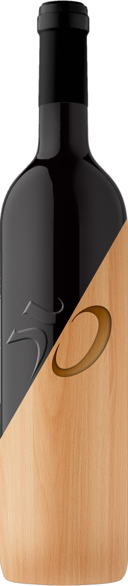

San Giogrio
Umbria Rosso IGT
A wine with ample, solid structure and very intense ruby red with garnet reflections. The aroma releases notes of cassis and bilberry and persistent plum jam, elegant, light oak with a background of cinnamon, cocoa and balsamic notes. The initial flavour is definitely concentrated, dense and fleshy with mature tannins that envelop the mouth with a long-lasting finish.
